GUÍAS DE EXTRACCIÓN:
AEROPRESS
¿Qué necesitas?
- AeroPress
- Filtros para AeroPress
- Tetera
- Molino para café
- Balanza digital
- Cronómetro
- Algo para revolver
- Taza de café o algún otro envase
Paso 1
Ponga a hervir 7 oz (200 g) de agua. Pese entre 15 y 18 gramos de café (según su concentración preferida). Muela hasta obtener una textura ligeramente más fina que la sal marina.
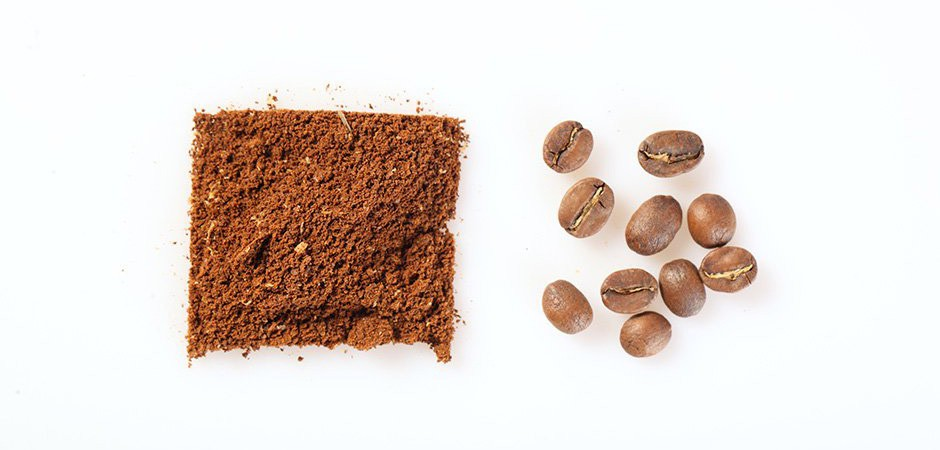Paso 2
Inserte el filtro de papel en la tapa de plástico desmontable del AeroPress.
Paso 3
Use un poco de agua caliente para mojar el filtro y la tapa. El agua tiene una doble función aquí: ayuda a que el filtro se adhiera a la tapa y calienta el recipiente de preparación. Esto puede ser un desafío ya que el agua está caliente y la tapa es bastante pequeña: sostenga la tapa por sus “orejas” y vierta el agua muy lentamente para que el filtro pueda absorberla.
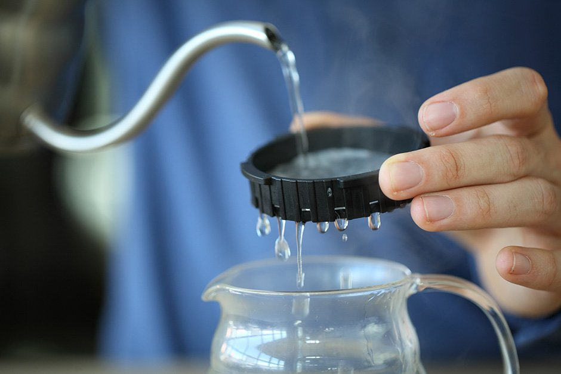Paso 4
Arme su AeroPress. Asegúrese de que todo el conjunto esté seco, ya que cualquier humedad residual puede comprometer el sellado del dispositivo.
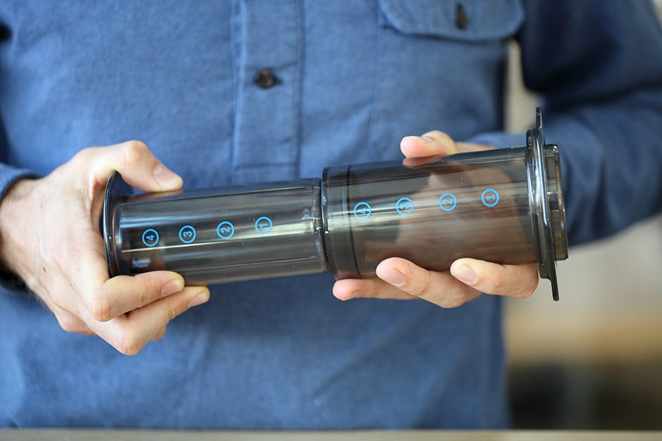Paso 5
Colóquelo en su balanza con el extremo acampanado hacia arriba, luego tare el peso. Los números deben aparecer al revés. Es posible colocar la tapa negra con el filtro y colocar la cafetera boca arriba, pero esto tiende a causar fugas y dificulta una preparación precisa.
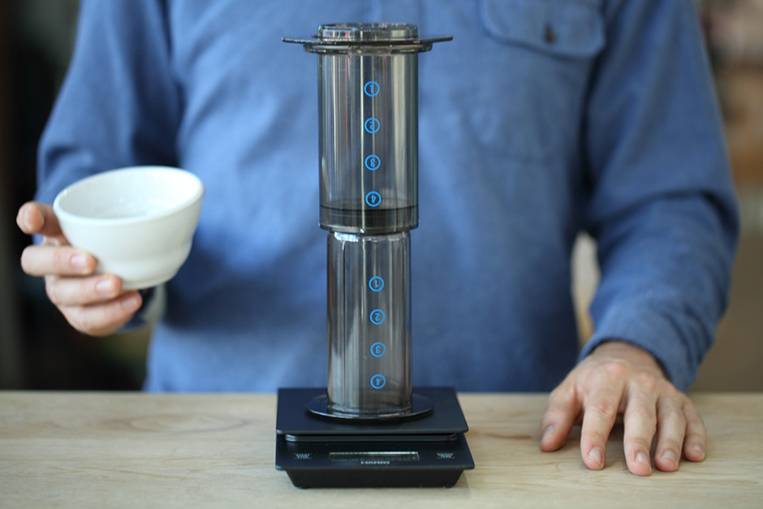Paso 6
Agrega tu café molido. Ten cuidado de no derramar ninguna partícula de la molienda en el borde o la parte superior del AeroPress.
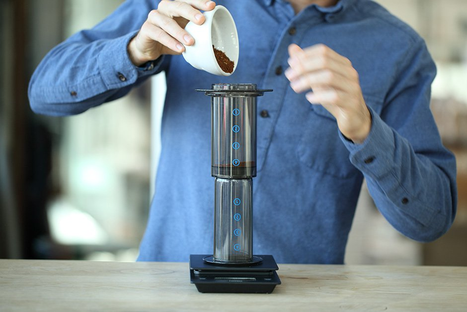Paso 7
Enciende un temporizador. Agregue el doble del peso de agua del que tiene molido (por ejemplo, para 15 gramos de café, agregue 30 gramos de agua). El agua debe estar a unos 90 grados C.
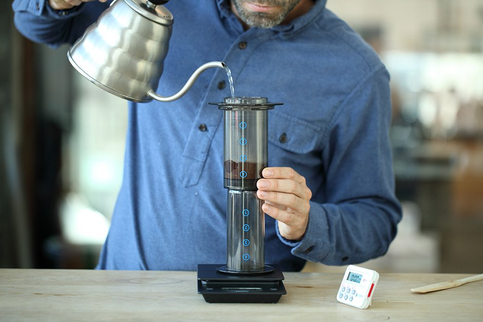Paso 8
Asegúrese de que el café esté saturado de manera uniforme, apisonando ligeramente con la paleta o un cuchillo mantequillero si es necesario, y déjelo reposar durante 30 segundos.
Paso 9
Utilice el resto del agua caliente para llenar la cafetera.
Paso 10
Después de que haya transcurrido un minuto, revuelva el molido 10 veces para agitar.
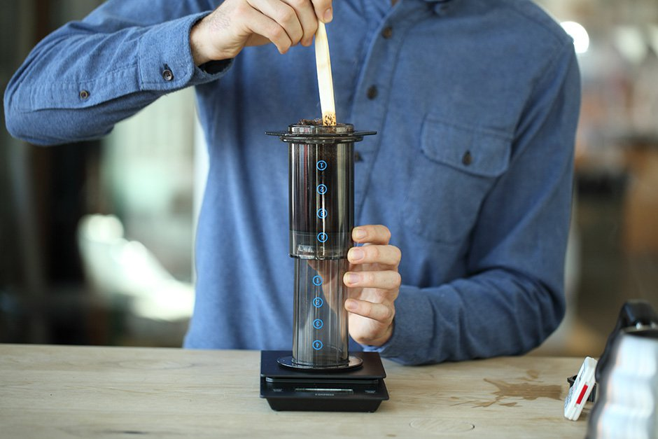Paso 11
Apriete la tapa, asegurándose de que encaje firmemente en las ranuras. Da la vuelta a todo el conjunto con rapidez y control. Colóquelo encima de su recipiente de preparación (taza, termo, etc) y comience a aplicar presión hacia abajo al émbolo. Experimentarás alrededor de 30 libras de resistencia aquí. Si empujar se siente demasiado fácil, es probable que su molienda sea demasiado gruesa; si es muy difícil de empujar, es probable que la molienda sea demasiado fina. Su café estará completamente preparado una vez que comience a emitir un silbido. Esto significa que no hay más agua para empujar a través del dispositivo.
 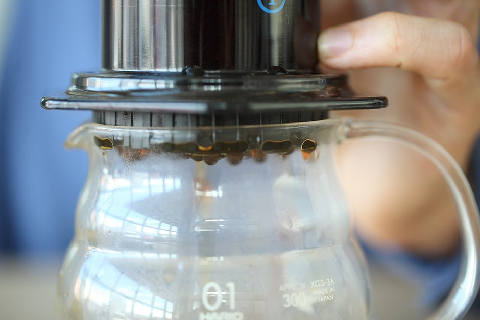
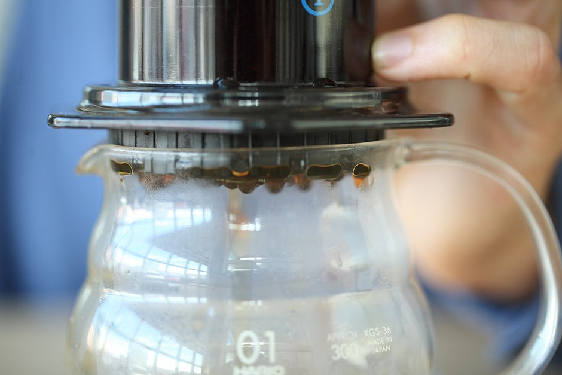
Paso 12
Una vez que haya desenroscado la tapa, puede sacar el filtro y el disco de café molido condensado, simplemente empujando la parte restante del AeroPress una última pulgada.
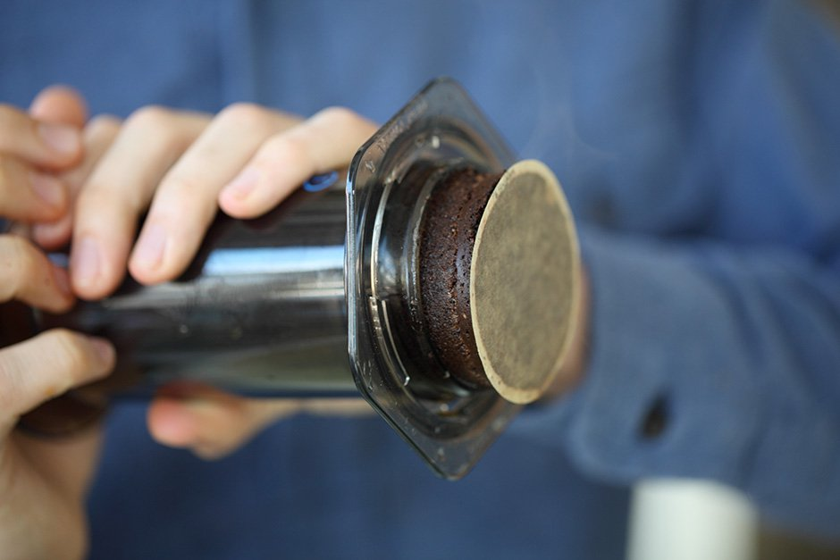Paso 13
DISFRÚTALO
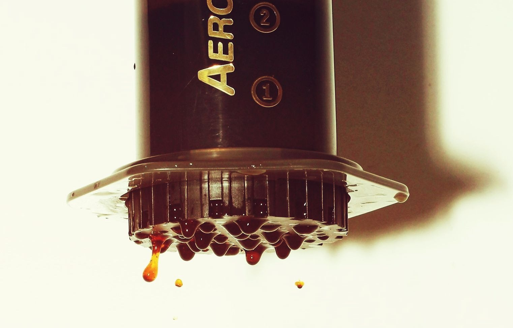 volverCHEMEX
¿Qué necesitas?
- Chemex
- Filtros para Chemex
- Tetera
- Molino para café
- Balanza digital
- Cronómetro
Paso 1
Nota: La cantidad de café y agua varía según el tipo de café que esté preparando y su concentración preferida. Como punto de partida, recomendamos utilizar 50 gramos de café y 700 gramos de agua (unas 25 onzas), y luego ajustar según su gusto. Pesar el café y molerlo hasta obtener una consistencia parecida a la sal marina.
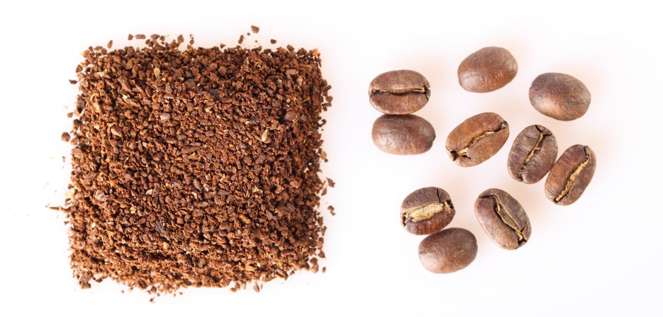Paso 2
Despliegue su filtro y colóquelo en su Chemex, asegurándose de que la porción de triple pliegue esté frente al pico de vertido y se extienda sin obstruirlo.

Paso 3
Sature completamente el filtro y caliente el recipiente con agua caliente. Deseche esta agua por el pico vertedor.

Paso 4
Vierta su café molido en el filtro y agítelo suavemente. Esto aplanará la superficie, lo que permitirá un vertido más uniforme.
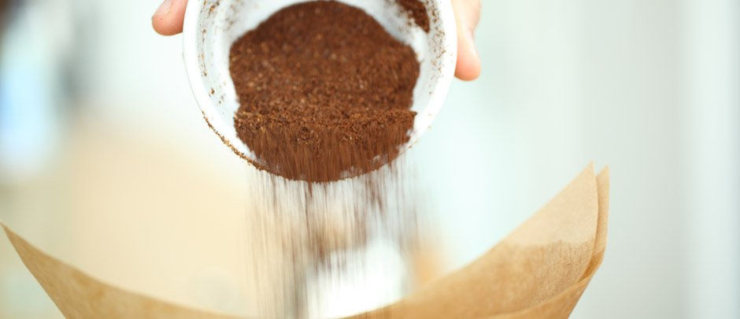Paso 5
Habrá cuatro vertidos en total, y este es el primero. Comenzando en el centro de la superficie, vierta suavemente el doble de agua que la cantidad de café que tiene en la cefetera (por ejemplo, 50 gramos de agua si tiene 25 gramos de café). Trabaje suavemente hacia afuera y evite verter las paredes del filtro. Notará que agregar esta cantidad de agua hace que el café se expanda o "florezca". Deje que lo haga durante 45 a 55 segundos. Una floración sólida asegura una saturación uniforme.

Paso 6
Vierta el agua en un patrón circular comenzando en el centro. Haga un espiral hacia los bordes de la superficie antes de regresar hacia el centro. Evite verter sobre el filtro. Deje que el agua gotee a través de la molienda hasta que caiga a 1 pulgada del fondo del filtro. Debe utilizar unos 200 gramos de agua para este vertido.
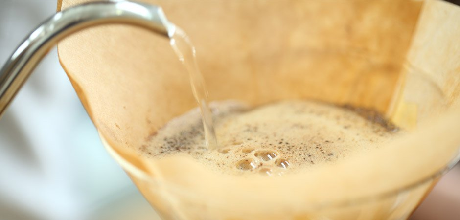Paso 7
Repita el mismo patrón de vertido que en el Paso 6, agregando agua en incrementos de 200 gramos. Repita una vez más, permitiendo que el agua se filtre a través de los granos molidos hasta que caiga 1 pulgada del fondo del filtro antes de comenzar el siguiente vertido.
Paso 8
Deje que el agua gotee a través de los granos por completo.
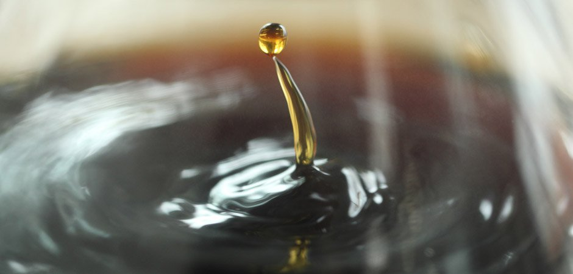Paso 9
La preparación debería haber tardado entre 3,5 y 4,5 minutos. Si la preparación fue demasiado rápida, considere usar un molido más fino o una velocidad de vertido más lenta la próxima vez. Si la preparación fue demasiado lenta, considere usar un molido más grueso o una velocidad de vertido más rápida.
Paso 10
DISFRÚTALO
volverPRENSA FRANCESA
¿Qué necesitas?
- Prensa Francesa
- Tetera
- Molino para café
- Balanza digital
- Cronómetro
- Cuchara
Paso 1
Ponga suficiente agua para llenar la prensa francesa hasta que hierva. Para una prensa de 17 oz, necesitará aproximadamente 350 gramos (12 onzas).

Paso 2
Mientras el agua se calienta, muele el café. El café de prensa francesa requiere un molido grueso y uniforme. Recomendamos comenzar con una proporción de café a agua de 1:12. Si está usando 350 gramos de agua, querrá 30 gramos de café.
Paso 3
Para empezar, vierta suavemente el doble de agua que la cantidad de café que tiene en la cefetera. Por ejemplo, si tiene 30 gramos de café, querrá comenzar con 60 gramos de agua.
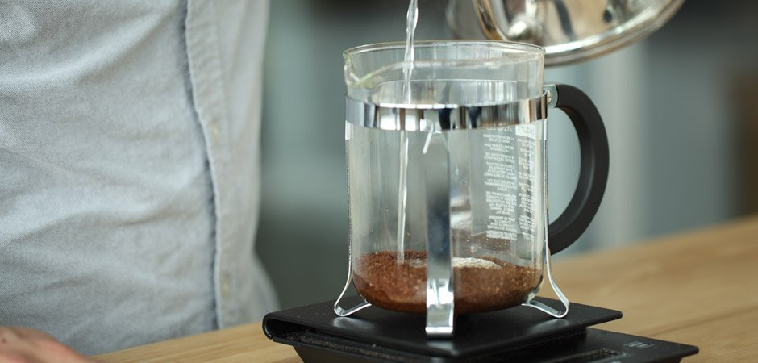Paso 4
Revuelva suavemente los granos con la cuchara. Deja que el café florezca durante 30 segundos.
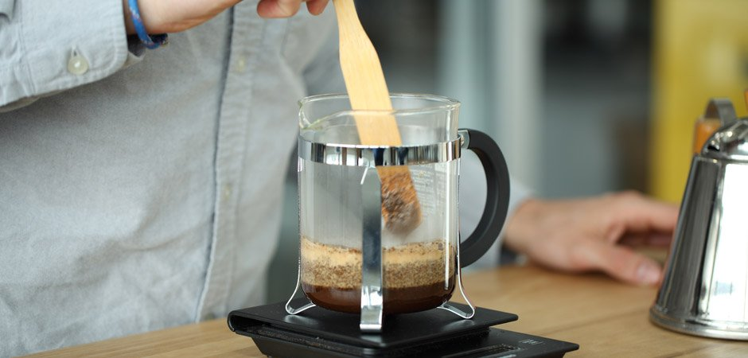Paso 5
Vierta el agua restante y coloque la tapa suavemente sobre la superficie. No la sumerja todavía. Deje reposar el café durante cuatro minutos. Cuatro. No lo adivines, usa el cronómetro.
Paso 6
Retire suavemente su prensa francesa de la balanza y colócala sobre una superficie estable. Presione el filtro hacia abajo. Si es difícil presionar, significa que su molienda es demasiado fina; si el émbolo "golpea" inmediatamente hasta el fondo, significa que su molienda es demasiado gruesa. Cuando haya terminado de presionar, sirva el café inmediatamente. No lo dejes reposar, ya que esto hará que continúe preparándose y se extraiga en exceso.